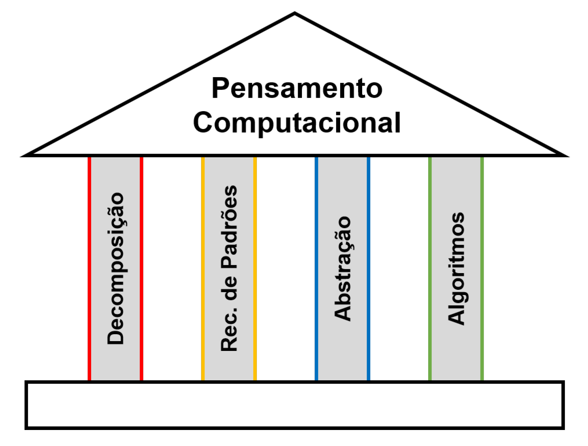

Pilar do Pensamento Computacional
Prof. Edvaldo Rodrigues – UNIPAR
ADS / Administração / Contábeis – 1º Período
Na última aula, estudamos o pilar do Pensamento Computacional:
Reconhecimento de Padrões
Hoje vamos avançar para o próximo pilar: Abstração
O pensamento computacional se apoia em quatro pilares fundamentais, representados abaixo:
Relembrando
É a capacidade de focar nos aspectos mais importantes de um problema, ignorando detalhes irrelevantes.
Ajuda a reduzir a complexidade e facilita a solução de problemas.
Fazer café em uma cafeteira: Você se preocupa com o processo completo da máquina?
Não! Basta colocar o pó, a água e apertar um botão.
Isso é abstração: você ignora os detalhes técnicos do funcionamento.
Você usa um comando como enviarEmail() sem saber como o e-mail trafega na internet.
Funções e bibliotecas são exemplos de abstrações computacionais.
Liste 3 exemplos onde você aplica abstração no seu cotidiano:
https://forms.gle/WqzoZCLt9fhWQ1i68Quando descrevemos um processo, nem tudo precisa ser explicado.
Abstração é escolher apenas os passos essenciais, ignorando detalhes desnecessários.
Exemplo: Processo de fazer um PIX
Não precisa citar: cor do botão, animação do app, tipo de celular...
O importante é descrever as ações funcionais que fazem o processo acontecer.
Aplicar a abstração para descrever processos sem se prender a detalhes operacionais irrelevantes.
https://forms.gle/kfBrVDwHPXVyUHEL7Problema: “Verificar se um aluno foi aprovado.”
Abstração: focar nas informações que influenciam o resultado
Aplicar a abstração para descrever processos sem se prender a detalhes operacionais irrelevantes.
https://forms.gle/3v6BNYQpeutGNytX9Todas as obras listadas estão indicadas no plano de ensino da disciplina.